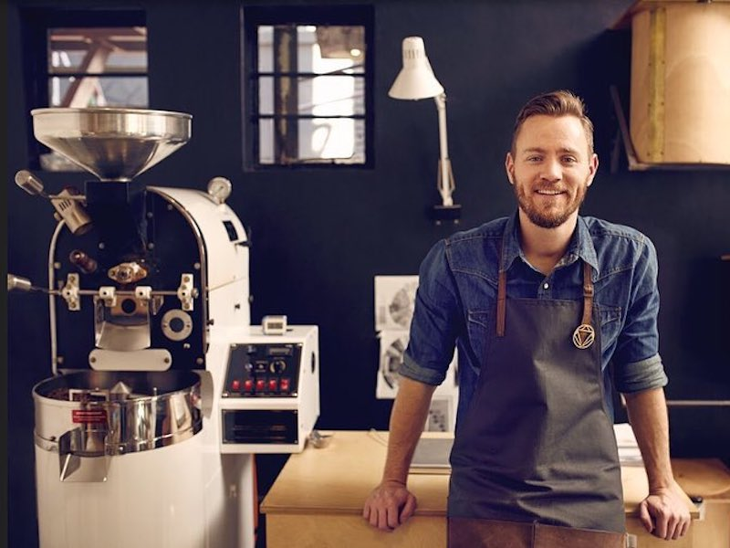
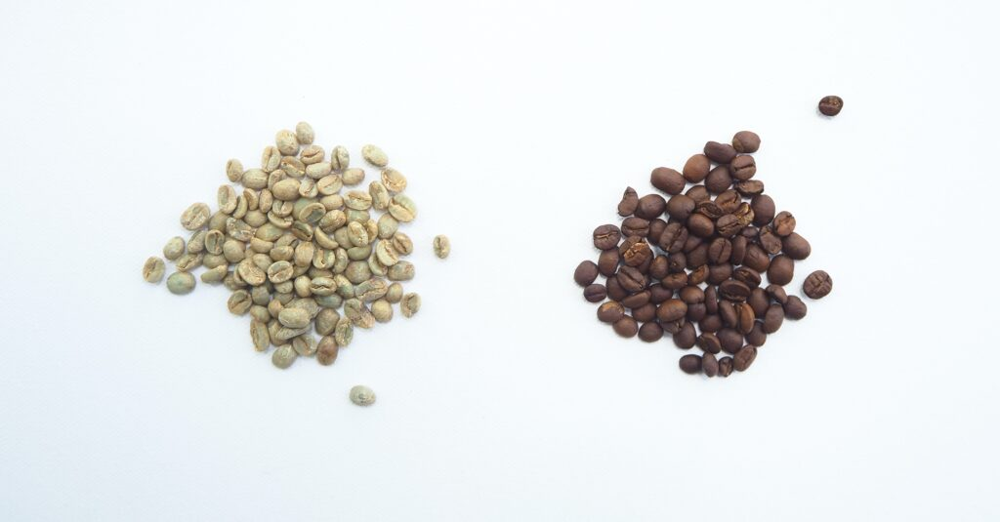
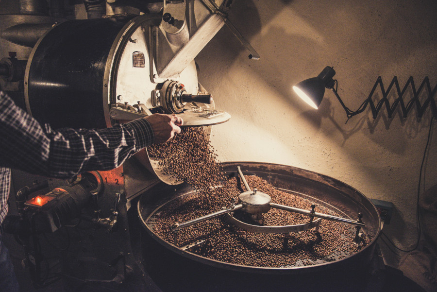
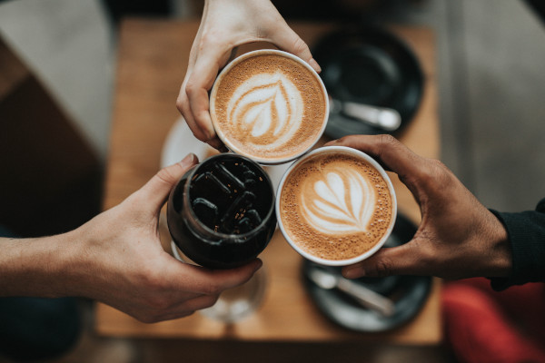

За Caldo Specialty Coffee…
Ние, създателите на Caldo Specialty Coffee, сме страстни кафе любители.
От години се опитваме да популяризираме консумацията на качествено кафе, подбудени от желанието да потопим повече българи във вълнуващия свят на спешълти кафето.
Знаем, че по нашите ширини кафе консумацията е по-скоро навик, а не страст.
В същото време знаем, че българският потребител умее да оценява високото качество и да му се наслаждава, стига да има достъп до продукти от по-висок клас и повече информация за произхода им.
Чрез внимателна селекция на нашите продукти, ние избираме кафета, които ще те запознаят с разнообразието от вкусове, което кафе растението, обработено с внимание и грижа може да ти достави.
Нашата история
Като повечето хора и ние стартираме всеки свой ден с чаша кафе, което ни събужда и ни дава енергия да сме продуктивни и да се справяме с ежедневните си задачи. Кафето е и напитката, която често съпровожда срещи с близки, приятели и работни партньори.
Създателите на Caldo Specialty Coffee
Как се зароди нашата любов към спешълти кафето?
През 2012-та година ни се наложи да пътуваме до Кейптаун, Южноафриканската република. Там посетихме кафенето Rosetta Roastery, в което се предлагаха висококачествени спешълти кафета с уникални вкусови профили.
Едно безценно запознанство
Собственикът Jono le Feuvre със страст ни обясни за произхода на кафето, което предлага. Разказа ни за усърдието, което влага в селекцията на своите кафета и какво взема предвид, когато ги подбира. Запозна ни с широкото разнообразие от уреди и техники, с които може да се приготвя кафе по най-добрия начин. Jono ни разказа за фермерите, с които работи и трудностите около отглеждането на кафе от по-висок клас.
Jono le Feuvre
Rosetta Roastery отвътре
Всеки ден посещавахме кафенето му в продължение на месец и опитвахме кафета с различен произход и вкусови профили. Започнахме да долавяме вкусовите нотки на горски и цитрусови плодове, бадеми, шоколад, лешници. Jono насочваше вниманието ни към ключовите характеристики на спешълти кафето, които го правиха толкова неустоимо вкусно и толкова различно от това, с което бяхме свикнали в ежедневието ни.
Тогава, през 2012-та година, се зароди нашата страст към кафето. И осъзнахме колко малко всъщност знаем за света на напитката, която съпровожда ежедневието ни от години…
Когато навикът се превръща в страст…
С времето започнахме да се интересуваме все повече и повече от произхода на кафето, което консумираме и как условията на отглеждане, преработка и изпичане се отразяват на вкусовия профил. Започнахме да прилагаме различни методи и да използваме разнообразие от уреди за приготвяне на кафе. Удивявахме се колко много техниката ни на приготвяне се отразява на финалния резултат.
Постоянно търсихме спешълти кафета от висок клас с уникални вкусови профили. Организирахме си дегустации с приятели, които бяхме запалили по новата си страст. Записахме се на бариста курсове и получихме сертификати от Specialty Coffee Association за дегустация, изпичане, еспресо техники и техники на варене.
Днес опитът ни помага да подбираме най-добрите спешълти кафета, като се стремим да има разнообразие, което ще позволи на феновете на Caldo да се докоснат до по-широка гама от вкусове. Така ще можете да разберете наистина колко вълнуващ е светът не спешълти кафето.
Изпичане
Зелени кафе зърна и средно изпечени кафе зърна
Уред за изпичане на кафе
След като закупим зелените кафе зърна, следва изпичането. Партнираме си с майстори пекари, като самите ние избираме степента на изпичане след серия от дегустации. Така се уверяваме, че вкусът ще подхожда на същностния вкусов профил на селектирания сорт кафе зърна.
Caldo общонст
С времето създадохме приятелства с фермерите и кафе производителите, с които работим. Тъй като знаем колко тежък е техният труд, се стремим да изкупуваме висококачествените зелени кафе зърна на адекватно високи цени. Чрез комуникацията си с тях, успяваме да подобрим качеството на кафетата от нашата селекция и да се уверяваме, че фермерите ни се чувстват мотивирани да продължават да се грижат за реколката си с любов.
Радваме се, че чрез своята дейност успяхме да изградим истинска общност от страстни кафе любители. Сред нас всеки любопитен почитател на кафето може да научи всичко, което го интересува относно кафе изкуството, техниките на обработка, изпичане, приготвяне. От кафе растението до чаша съвършено еспресо – в Caldo общността можете да намерите всички детайли, които ще ви помогнат да превърнете кафе навика си в преживяване, което ви носи радост и удовлетворение.
Алехандро Гарсия – един от фермерите, с които работим.
Ако искате да получите повече информация и съвети, може да посетите нашата блог страница с полезни статии. Там може да откриете интересни факти за кафето, кафе културата, уреди за приготвяне, рецепти и т.н. Ако не намираш информацията, което търсиш, винаги може да се свържеш с нас.